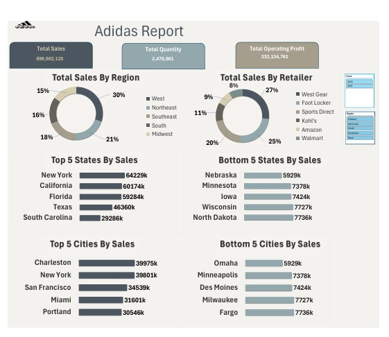
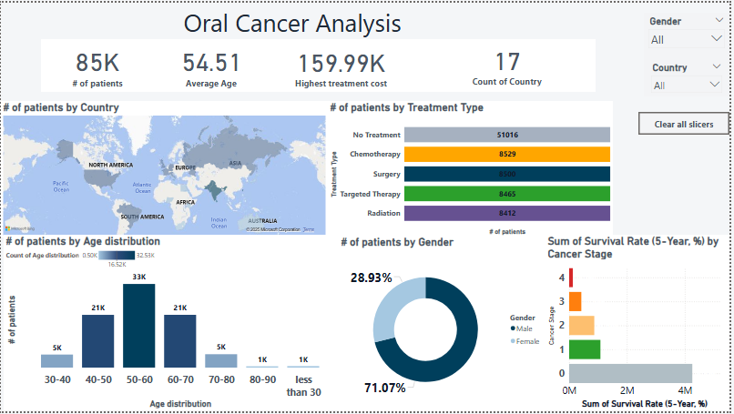
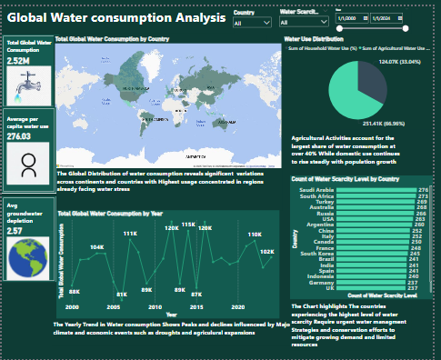
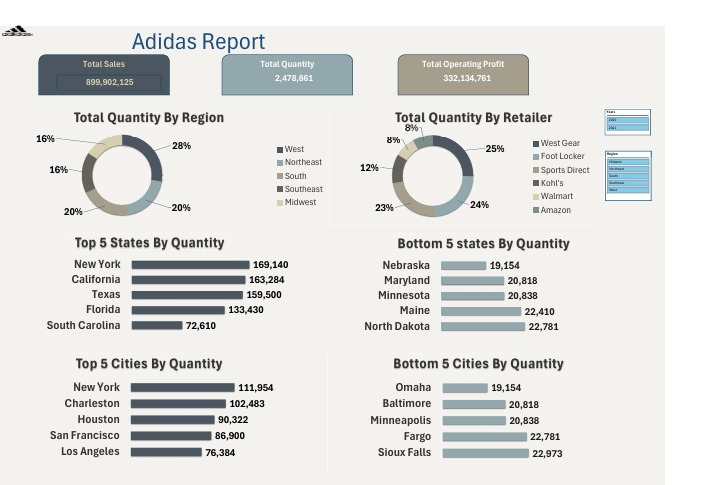

Ahmad Yaser
About Me
I'm a Data Analyst with a background in accounting, and a passion for transforming raw data
into valuable insights.
I transitioned into data analysis by mastering tools like Excel, Power BI,
and currently studying Python and SQL to enhance my capabilities
further.
My focus is on building meaningful dashboards, analyzing real-world data, and delivering clear, actionable
insights.
Projects
üíß Water Analysis Dashboard
üìä Adidas Sales Dashboard
üì¶ Adidas Quantity Analysis
ü•ó Nutrition Analysis
üߨ Oral Cancer Analysis
ü©∫ Cancer Dashboard
üåç Environmental Trends
üìä Adidas Sales Dashboard
Insights:
- Total Sales: 899,902,125
- Total Quantity Sold: 2,478,861 units
- Total Operating Profit: 332,134,761
- West region contributed 30% of total sales, the highest among all regions.
- West Gear was the top retailer with 27% of sales, followed by Walmart and Amazon.
- New York had the highest sales among states with 642.29K units.
- Charleston and New York City were the top-selling cities.
- Lowest sales were recorded in Nebraska and Omaha city.
üߨ Oral Cancer Analysis
Insights:
- Patient Demographics:
- 85,000 patients were analyzed, with an average age of 54.51 years.
- Gender distribution: 71.07% male, 28.93% female, indicating a higher prevalence among males. - Tottreatment Types:
- Majority of patients (51,016) received no treatment, followed by chemotherapy (8,529), surgery (8,600).
- This highlights gaps in healthcare access or early diagnosisal Operating Profit: 332,134,761 - Survival Rates:
- Survival rates vary by cancer stage (data not fully clear), but early-stage detection likely improves outcomes.
- Highest treatment cost: $159,990, reflecting the financial burden of advanced treatments.
- Geographic Distribution:
- Data spans 17 countries, with potential disparities in healthcare infrastructure affecting treatment availability.
ü©∫ Cancer Dashboard

Insights:
- Patient Data:
- 167,000 patients analyzed, with an average age of 69.2 years.
- 59.93% survival rate, indicating moderate success in treatment outcomes. - Demographic Trends:
- Gender distribution: 58.81% male, 41.37% female (approximate).
- Age groups: Significant representation in 42.57% of a specific age bracket (likely elderly). - Geographic and Economic Factors:
- Data covers multiple countries, with potential correlations between economic classification and healthcare costs.
- Survival rates may vary by cancer stage, emphasizing the need for early detection programs. - Data Gaps:
- Some metrics lack context, suggesting incomplete visualization or unclear labeling.
üåçGlobal Environmental Trends Analysis

Insights:
- Temperature Trends:
- The average global temperature is approximately 19.88°C, with fluctuations observed over the years (e.g., peaks at 22.52°C and lows at 17.57°C).
- Recent years show variability, indicating potential climate instability. - CO2 Emissions:
- The average CO2 emission level is 10.43 (units not specified).
- Major contributors include China, the USA, India, and Russia, highlighting the need for targeted emission reduction policies. - Sea Level Rise:
- The average sea level rise is 3.01 (units not specified), likely linked to melting ice caps and thermal expansion due to global warming. - Energy Adoption:
- The average renewable energy adoption rate is 27.30%, with countries like Germany (28.74%) and France (28.71%) leading.
- Emerging economies (e.g., India, Indonesia) lag, suggesting opportunities for growth in green energy investments. - Extreme Weather Events:
- A total of 7,291 extreme weather events were recorded, with hotspots potentially in regions like the USA (569 events) and others (354 events).
- This underscores the increasing frequency of climate-related disasters.
ü•ó Nutrition Analysis Dashboard

Insights:
- Overall Nutritional Values:
-A total of 243K calories were consumed across all food items.
-Macronutrients include 11K grams of protein, 21K grams of carbohydrates, and 12K grams of fats.
-There are 6418 grams of sugar, which is relatively high compared to 1672 grams of fiber, indicating a possible imbalance in dietary fiber intake.
- Top Caloric Foods:
-Items such as Pad Thai, Panna Cotta, Pulled Pork, and Spaghetti are the top contributors to total calories . - Calorie Composition by Food Type:
-Some dishes like Baby Back Ribs and Prime Rib have a high percentage of calories coming from fat.
-Items such as Fish and Chips and Chocolate Cake show a heavy carbohydrate contribution. - Calories by Weight Trend:
-There's a peak in calories between 200g–300g weight range, especially around 250g (43.1K calories), indicating this is a common serving weight for high-calorie meals.
-After that, the calorie count decreases with heavier foods, suggesting that lighter meals may be more calorie-dense.
üíß Global Water Consumption Analysis Dashboard
Insights:
- Global Water Consumption:
-The total global water consumption is 2.52M cubic meters, with an average per capita use of 276.03 m³.
-Agricultural use dominates, making up 86.04% of all water usage, followed by household and industrial use. - Geographical Distribution:
-High water consumption is concentrated in regions with large populations and agriculture-heavy economies, such as parts of Asia and North America.
-Regions like Africa show lower consumption but may have higher scarcity. - Water Scarcity Overview:
-Countries like India, China, and Pakistan rank highest in water scarcity levels, indicating critical pressure on water resources.
-Water stress is tightly linked to population growth and agricultural demands. - Yearly Trends:
-Water consumption fluctuates over the years, peaking around 2012–2014 with values exceeding 120K, possibly due to economic or climatic changes.
-A slight decline post-2016 could point to conservation efforts or industrial slowdowns.
üì¶ Adidas Quantity Analysis
Insights:
- The West region and major urban areas like New York City and Houston are driving success.
- Retailers like Foot Locker and Walmart are crucial to volume
- There are clear geographic and retail gaps where performance can be improved.
üì¨ Contact Me
Email: ahmadyaser17199813@gmail.com
LinkedIn: linkedin.com/in/ahmad-yasser-faiq-data-analyst
GitHub: github.com/ahmadyase1234
Phone: 01094104923 / 01555313788